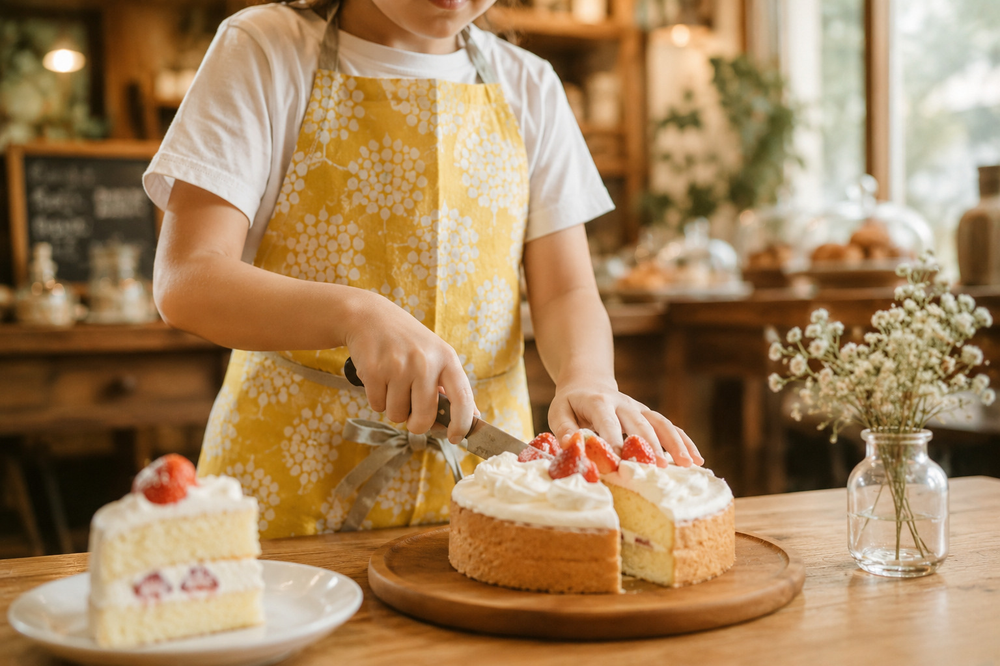
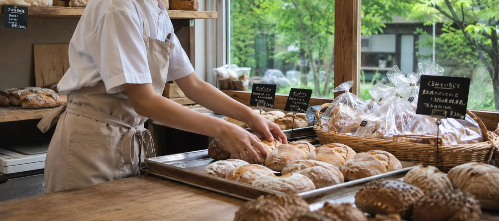

子どもに、本物の体験を。
軽井沢のお店で「体験する」からはじまる、
お金と社会の学び。
パン屋さんで生地をこねる。花屋さんで花束をつくる。子どもが本物のお店で、本物のプロから仕事を教わり、参加の記念にもらった「まちか」で「自分のお金の使い方」を考える——教科書では学べない体験を、軽井沢の街ぐるみでつくっています。

このプログラムで、子どもができること
-
本物の仕事を
体験する軽井沢のお店で、本物のプロから本物の道具で仕事を教わります。
-
体験して、
お金を学ぶ参加の記念として地域通貨「まちか」を受け取ります。何にいくら使うか、自分で考えます。
-
社会の仕組みを
知る『体験する→地域通貨「まちか」をもらう→「まちか」をつかう』の経済の循環を、街の中でまるごと体験します。
-
つくったものを
持ち帰る自分の手でつくった成果物はおみやげに。体験がかたちに残ります。
保護者のみなさまへ
家庭ではなかなか教えにくい「お金」と「キャリア」の教育。街のがっこうは、その第一歩を楽しい体験としてお届けします。仕事のおもしろさ、将来の夢への興味、お金の価値、やり切った自信——楽しみながら社会性を身につけるお子さまの成長を、すぐそばで実感していただけます。
SAFETY
安全への取り組み
お子さまをお預かりするプログラムとして、安全を最優先に運営します。
事務局スタッフの帯同
体験には必要に応じて事務局スタッフが帯同し、お店と一緒にお子さまを見守ります。
保険への加入
一般社団法人街のがっこうが傷害保険・賠償責任保険に加入し、万一の事故の際は法人が一次対応します。
アレルギー・体調への配慮
お申し込み時に伺い、体験内容に応じて事前にお店と共有します。
緊急時のご連絡
体験中の緊急連絡体制を整えたうえで実施します。
※詳細は開催決定時のご案内にてお知らせします。
参加のご案内
- 対象年齢
- ※準備中（開催決定時にご案内します）
- 参加費
- ※準備中（開催決定時にご案内します）
- 体験時間
- 60〜90分程度（体験内容により異なります）
- 場所
- 軽井沢町内の協力店
- 開催日程
- 最新の開催日程・空き状況は、開催決定後に予約ページでご案内します
開催決定のお知らせを受け取る
現在、第1回の開催に向けて準備を進めています。開催が決まりましたら、メールでいち早くお知らせします。
お知らせ登録（準備中）お急ぎのご質問は machinogakko_karuizawa@gmail.com までお気軽にどうぞ。

FAQ